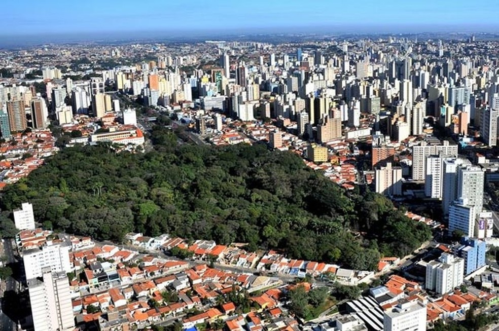

Um pouco sobre sua história
Campinas é uma cidade no sudeste brasileiro, a noroeste de São Paulo. Ela foi fundada em 14 de julho de 1774. Entre o final do século XVIII e o começo do século XX, a cidade teve o café e a cana-de-açúcar como importantes atividades econômicas. Porém, desde a década de 1930, a indústria e o comércio são as principais fontes de renda, sendo considerada um polo industrial regional.